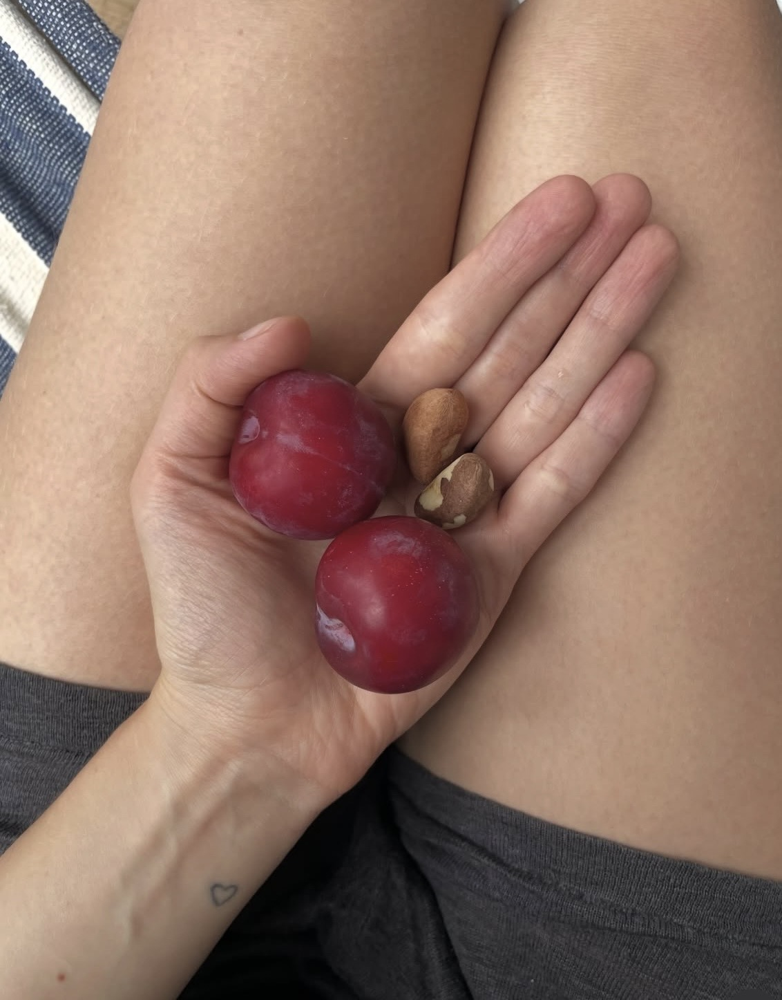

my name is anja. i am a certified health and wellness coach.
i’m passionate about everything related to nature and vitality, but most importantly
about connecting with the people i work with. i feel deep gratitude that people entrust me
with their dreams, hopes, and so much more when we’re working together.
i try my best to create a space where we feel safe, inspired, and connected.
my approach is to encourage clients to take ownership of their journey relatively early
and remain cause-focused.
working with clients made me realize that the missing piece is often self-knowledge,
so we take time for self-reflection and increasing awareness around what needs
your attention for your personal healing and growth.
i became a certified health and wellness coach because i lost my mother quite young
and am very cognizant of taking care of my health. her health was always a big concern
for our family, and since we know that about 90% of our health is determined by lifestyle,
i find it critical to prioritize mindfulness around our routines and habits
that reinforce our way of caring for ourselves every day.
i am also available for corporate wellness projects. if that’s relevant for your organization, let’s talk.
one of the reasons i’ve been drawn to health coaching is my own transformation:
from an obese kid to losing 40 kg at 16, to training for athleticism at 32 without any sports background.
i grew up obese, and at 16 i started to feel some autonomy and agency.
that was the moment i decided to become fit, and lost over 40 kg.
years later, at 31, i wanted to support my health with more movement.
i tried yoga, pilates, and lifting weights like a bodybuilder, and it only really clicked when i added jumping and sprint training.
i recalled that at school i was pretty good at short distances and always last on long runs —
my body seems to thrive on explosive work, and it gives me real joy.
along the way, i also built muscle on a plant-based diet — not by aiming for it, but as a natural result of training.
i’m welcoming any body adaptations on my journey to becoming fast and powerful.
what i try to bring into my coaching is that same sense of ownership and self-reflection:
gently helping people notice what actually works for them, not what they think they’re supposed to do.


my philosophy on wellness arises from my personal experience of childhood trauma and grief
affecting my health and stalling my thriving. i believe that elevating your energy levels
and experience of life begins with cultivating a mindset that prioritizes the true well-being
of yourself and everything around you. becoming healthier as an individual transforms communities
and creates a stronger, healthier environment — with a ripple effect.
share what you’ve been struggling with — i would love to start the conversation
anjahwc@gmail.com
i can provide:
- collaboration & accountability
- insights into why your body has moved out of balance
- practical tools to support your wellbeing
- an ethical and investigative approach
- referrals when additional support is needed